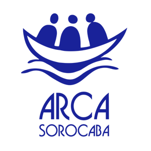

Convivência
Uma comunidade, não uma lista: as pessoas se conhecem, participam e convivem.

ARCA Sorocaba Guardiã da DignidadeA ARCA Sorocaba é uma associação beneficente, sem fins lucrativos, que acolhe pessoas adultas com deficiência intelectual há mais de 10 anos. Aqui, a palavra que guia o cuidado é autonomia.
Em 3 passos simples: escolha o tipo, o valor e como quer doar. Qualquer valor ajuda.
1 Tipo de doação 2 ValorCom R$ 30 você mantém um dia de oficina.
Para doar todo mês, agende o PIX no app do seu banco ou repita a doação a cada mês.
Chave copiada. Agora é só colar no app do seu banco.
Doação com cartão de crédito: ainda não está disponível.
A ARCA Sorocaba é a Associação Beneficente Amigos da Arca de Sorocaba (ABAAS). Há mais de 10 anos, ela acolhe pessoas adultas com deficiência intelectual: aqui elas encontram oficinas, convivência, acompanhamento de equipe e, principalmente, autonomia.
A ARCA também acompanha e orienta as famílias, e não recebe verba pública: a casa se mantém com doações, bazar e ações solidárias.
Em breve: a história de como a ARCA surgiu, contada pela própria equipe.
Aqui não é um lugar para ocupar o tempo. É casa: de convivência e dignidade, não de assistência passiva.
Uma comunidade, não uma lista: as pessoas se conhecem, participam e convivem.
Acompanhamento de equipe, todos os dias, para cada pessoa acolhida.
A palavra que orienta o trabalho: oficinas e rotina que ampliam o que cada pessoa pode escolher e fazer.
Dignidade não tem idade. Cada pessoa adulta merece rotina, convívio e propósito.
Todo mundo já viu campanha de instituição que cuida de crianças com deficiência. Mas quase ninguém pergunta o que acontece quando essa criança cresce. A deficiência não desaparece na vida adulta. O que desaparece é o cuidado.
É aí que a ARCA existe: pessoas adultas de Sorocaba e região encontram aqui rotina, convivência e propósito.
A ARCA integra a rede internacional L'Arche, presente em dezenas de países. Pertencer a essa rede é um sinal de confiança e de continuidade.
Em breve: apresentação da equipe que cuida da ARCA.
Eles não estão aqui porque não tinham outro lugar. Estão aqui porque este é o lugar deles.
Com um valor mensal que cabe no seu bolso, você mantém esta casa de portas abertas. Torne-se um Guardião da ARCA.
Quero ser um GuardiãoDo doador mensal a quem só pode divulgar: qualquer valor e qualquer forma de apoio ajudam a manter a ARCA de portas abertas.
Doe um valor fixo, todo mês, e dê à ARCA o chão para planejar as oficinas, as refeições e a equipe. É a forma de ajuda que mais sustenta a casa.
Quero ser um GuardiãoDoe agora com a chave do CNPJ da ARCA. A doação com cartão ainda não está disponível.
Chave PIX (CNPJ)19.831.448/0001-85Chave copiada. Agora é só colar no app do seu banco.
Roupas e acessórios acessíveis: cada peça ajuda. Av. Santos Dumont, 100, Jardim Ana Maria, Sorocaba/SP.
Entrar no grupo do BazarPizza, feijoada, pastel, almoço e noite de prêmios. Comprar, divulgar ou ajudar no dia faz a arrecadação acontecer. As datas são divulgadas no canal Amigos da Arca, no Instagram.
Ver eventos do mêsRoupas e objetos em bom estado abastecem o bazar. Combine a entrega pelo WhatsApp antes de levar.
Combinar a doaçãoSua empresa pode apoiar, por exemplo, com o patrocínio de um evento. A ARCA já conta com parceiros como o Supermercado Confiança, por meio da Ação Fraternal.
Falar sobre parceriaVoluntários fazem a ARCA acontecer nos eventos, no bazar e na convivência. Deixe o seu nome e a forma como quer ajudar: a mensagem abre no WhatsApp da ARCA.
Abrimos o WhatsApp com a sua mensagem. É só enviar.
A maior dúvida de quem doa online é “como sei que meu dinheiro é bem usado?”. Na ARCA, a resposta é honesta e próxima: você vai ver.
Manter a ARCA funcionando custa cerca de R$ 30 mil por mês. Esse valor vira alimentação, transporte, materiais das oficinas, contas da casa e equipe. A ARCA não recebe verba pública.
A chave PIX é o CNPJ da associação: 19.831.448/0001-85.
Todo Guardião entra no canal e recebe, com regularidade, o que aconteceu na casa e o que a doação manteve. Você não recebe só um agradecimento genérico: recebe o resultado.
Conheça o Guardião MensalVocê é convidado a visitar a ARCA pessoalmente e conhecer a casa. A gente não tem nada a esconder. A gente tem muito a mostrar.
Combinar uma visitaSó publicamos o que é confirmado. Cada item vira um link assim que a ARCA disponibilizar o arquivo.
Fale com a ARCA pelo WhatsApp, combine uma visita ou conheça o bazar. A porta está sempre aberta.
Abrimos o WhatsApp com a sua mensagem. É só enviar.